Aplicação na mão
Bom, agora que conhecemos o equilíbrio estático dado pelo MEF e a matriz de rigidez do elemento de pórtico no sistema global, é hora de voltar ao nosso pórtico metálico simples e resolvê-lo na mão. Lembrando que esse pórtico possui o mesmo perfil nas colunas e na viga, tubular retangular de 400x200 mm e 12,5 mm de espessura da parede, com a maior dimensão (direção do eixo y da seção) perpendicular na viga e nas colunas. As propriedades da seção são $A = 143,75 cm^2$, $I_z = 9918,62 cm^4$, $I_y = 29762,37 cm^4$, $Z_z = 991,86 cm^3$, $Z_y = 1488,12 cm^3$, $J = 22951,87 cm^3$ e $\rho_l = 113 kg/m$ (massa por unidade de comprimento). Toda a estrutura é de aço A36 ($E = 200 GPa$). O pórtico tem a largura de 9,4 m e altura de 4,7 m. A placa pesa 300 kg tem o comprimento de $4,0 m$ e está a $d = 4,2 m$ da extremidade direita a carga de uso, $q$, é de 2,0 kN/m e a carga de vento vale $v = 465,87 y^{0,2}N/m$ sendo $y$ variando na altura do pórtico.
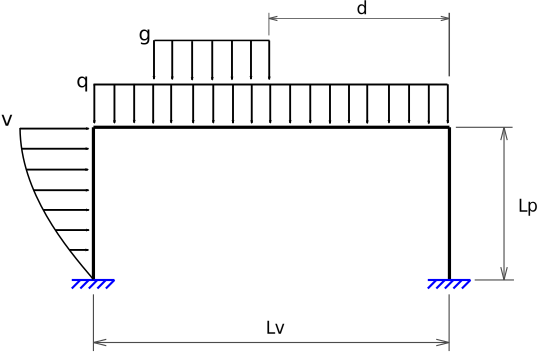
Graus de liberdade da estrutura
Primeiro, vamos descrever todos os graus de liberdade globais da estrutura em nosso pórtico idealizado em um diagrama de corpo livre, assim como numerar seus nós e suas barras.
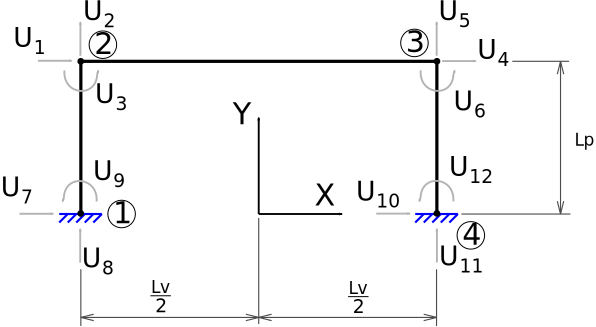
A numeração dos nós, barras e graus de liberdade pode ser qualquer, porém, por questões práticas de implementação computacional sempre iniciam em 1, nunca pula-se um número e para os graus de liberdade numeram-se primeiro as direções com graus de liberdade livre, ou seja, direções as quais os apoios não influenciam.
Matematicamente, vamos descrever a numeração dos graus de liberdade através da matriz de graus de liberdade, $\textbf{GL}$. Nessa matriz contamos as linhas como sendo a numeração dos nós, ou seja, a linha 1 é relativa ao nó 1, a 2 ao nó 2 e assim por diante, e as colunas relativas às direções cartesianas, ou seja, no plano a coluna 1 é $X$, a coluna 2 é $Y$ e a coluna 3 é $Z$ (lembrando que a rotação é na direção $Z$, ou em torno de $Z$). Então preenchemos essa matriz com os números dos graus de liberdade relativos à cada nó (linhas da matriz) de acordo com cada direção cartesiana (colunas da matriz), ou seja, para nosso exemplo:
É possível colocar quantos nós quiser não somente nas extremidades das barras, lembrando que os resultados são calculados em uma primeira etapa nos nós, ou seja, se eu quiser um resultado no meio da barra 2, eu colocaria um nó lá, dividindo então a barra 2 em outros dois elementos, 2a e 2b, então nosso pórtico teria um total de 4 elementos.
No caso de outros tipos elementos com mais graus de liberdade por nó, por exemplo, na treliça espacial, a matriz $\textbf{GL}$ teria mais uma coluna.
Graus de liberdade dos elementos
Na sequência precisamos explodir a estrutura dividindo-a em elementos de pórtico e a cada elemento descrever os graus de liberdade locais do elemento. A numeração dos nós do elemento é fundamentada no utilizado para sua formulação, como foram dois no de viga e dois no de treliça, sempre teremos nós 1 e 2 no elemento.
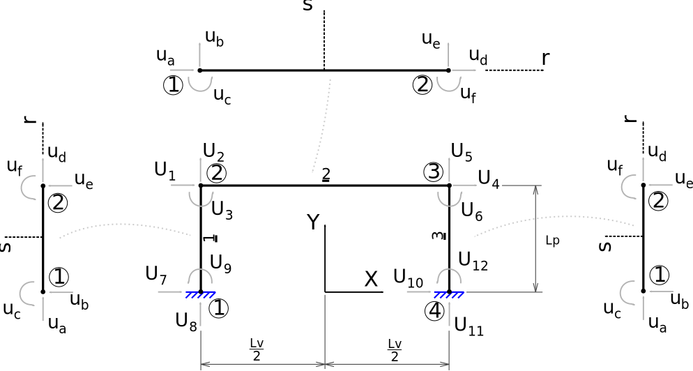
A numeração dos graus de liberdade nesse caso é fixa à numeração do nó, pois foi seguindo essa ordem que derivamos a matriz de rigidez. Portanto, para o nó 1, o grau de liberdade longitudinal à barra é o 1, o perpendicular, 2, e o de rotação 3, para o nó 2, o longitudinal é o 4, o perpendicular 5 e o de rotação 6. O que podemos variar é quem será o nó 1 ou 2 dos elementos quando posicionados na estrutura, tanto faz ele ficar na esquerda ou direita no elemento 2 por exemplo. Sua posição implica no valor do ângulo $\theta$ medido entre sistema de coordenadas local $x,y$ e global $X,Y$.
Matematicamente, escrevermos a relação dos nós locais dos elementos com os globais da estrutura através da matriz de incidência do elemento, $\textbf{IE}$, na qual as linhas representam os números dos elementos, a primeira coluna representa o nó na estrutura escolhido para o posicionamento do nó 1 do elemento e a segunda coluna do nó na estrutura para o posicionamento do nó 2 do elemento. Para o nosso caso, a matriz $IE$ fica:
No caso de elementos com mais nós, a matriz de incidência deve seguir uma ordem pré-definida de posicionamentos, com o número de colunas igual ao número de nós do elemento.
Ângulo de rotação das barras
O ângulo $\theta$ é sempre medido no sentido anti-horário partindo-se da direção positiva do eixo $X$ global à direção longitudinal da barra, ou direção do eixo $x$ local. Portanto, os ângulos para as barras 1, 2 e 3 são respectivamente:
Lembre de sempre observar a incidência das barras. Por exemplo, no caso da barra 1 ter a incidência de 2 para 1, isso significa que seu eixo local $x$ está com direção positiva para baixo (figura como referência). Sendo assim o ângulo medido entre a direção global $X$ e a local $x$ nesse exemplo é $270^o$. Mas, utilizando-se coordenadas resolve tudo.
Como você fez isso? Simples, utilizei as coordenadas dos nós no sistema global de acordo com a matriz de incidência dos elementos. As coordenadas dos nós 1, 2, 3 e 4 em metros são as seguintes:
O ângulo medido no sentido anti-horário partindo-se da direção positiva do eixo $X$ global à direção longitudinal da barra pode ser medido como:
Sendo $(x_1, y_1)$ as coordenadas do nó da estrutura definido como nó 1 do elemento através da matriz de incidência, $\textbf{IE}$, e $(x_2, y_2)$ as coordenadas do nó da estrutura definido como nó 1 do elemento.
No entanto, como o cálculo da matriz de rigidez dos elementos no sistema global requer o seno e o cosseno dos ângulos das barras, podemos calculá-los diretamente com:
Portanto, os ângulos de cada uma das barras e os valores dos senos e cossenos respectivos são:
Elemento 1: $\theta = 90^o$, $cos 90^o = 0$, $sen 90^o = 1$
Elemento 2: $\theta = 0^o$, $cos 0^o = 1$, $sen 0^o = 0$
Elemento 3: $\theta = 90^o$, $cos 90^o = 0$, $sen 90^o = 1$
E o que vai acontecer com os graus de liberdade das barras que não estão na horizontal quando eu calcular $\textbf{k}_g$? Eles serão decompostos nas direções (X, Y) globais e então você terá matrizes de rigidez de todos os elementos escritas em um mesmo sistema de coordenadas.
Determinação das matrizes de rigidez globais dos elementos
Das determinações anteriores, sabemos que a matriz de rigidez de um elemento de pórtico no sistema global é:

Portanto, podemos escrever as matrizes de rigidez no sistema global de todos os três elementos da estrutura. Atenção às constantes $E$, $A$ e $L$, elas podem variar de elemento para elemento. Além disso, observe o posicionamento da seção transversal em relação ao plano do pórtico para o correto uso da inércia e que a discretização é feita no centro de gravidade da seção transversal (pode ser feita em relação a outro ponto, mas as propriedades precisariam ser recalculadas), por isso os comprimentos precisam ser calculados levando em conta o comprimento das barras do pórtico ligadas pelos centros de gravidade das seções.
Elemento 1: $\theta = 90^o$ ($cos 90^o = 0$, $sen 90^o = 1$), $E_1 = 20000 kN/cm^2$, $A_1 = 143,75 cm^2$, $I_z = 9918,62 cm^4$ e $L_1 = 460 cm$
Elemento 2: $\theta = 0^o$ ($cos 0^o = 1$, $sen 0^o = 0$), $E_2 = 20000 kN/cm^2$, $A_2 = 143,75 cm^2$, $I_z = 9918,62 cm^4$ e $L_2 = 920 cm$
Elemento 3: $\theta = 90^o$ ($cos 0^o = 0$, $sen 90^o = 1$), $E_3 = 20000 kN/cm^2$, $A_3 = 143,75 cm^2$, $I_z = 9918,62 cm^4$ e $L_3 = 460 mm$
Agora precisamos criar a matriz de rigidez da estrutura como um todo, acoplando as matrizes de rigidez globais dos elementos da mesma forma que as barras estão conectadas, para garantir a correta distribuição das rigidezes nos graus de liberdade da estrutura.
Determinação da matriz de rigidez da estrutura
O que é a matriz de rigidez da estruturas? Lembra? É a matriz de rigidez que rege o comportamento estrutural (no nosso caso) da estrutura como um todo composta pelos seus elementos formulados como matrizes de rigidez globais.
Essa matriz de rigidez da estrutura será criada (existem outras formas) utilizando a nossa regrinha simples de endereçamento, a indexação do elemento. Recordando que a ideia dessa regra é relacionar os graus de liberdade do elemento no sistema global com os graus de liberdade da estrutura também no sistema global, utilizando a matriz dos graus de liberdade, $\textbf{GL}$, e a matriz de incidência dos elementos, $\textbf{IE}$. O endereçamento é feito pelos vetores de cada elemento chamados indexadores.
Antes de determinar a matriz de rigidez da estrutura, vamos pensar um pouquinho. Como vimos todas as colunas da matriz de rigidez da estrutura correspondentes aos graus de liberdade restringidos estarão multiplicadas por zero, ou seja, seu cálculo não vai servir para nada além de desperdiçar tempo computacional. Também vimos que em função da forma com que é montado o nosso sistema linear de equações da estrutura, equilíbrio estático $\textbf{K} \textbf{U} = \textbf{F}$, em função do pré-estabelecido para a numeração dos graus de liberdade, livres primeiro, a matriz de rigidez pode ser separada em duas, uma para o cálculo dos deslocamentos e outra para o cálculo das reações de apoio. Então, vamos ser espertos e montar apenas o que precisamos, primeiro a porção da matriz de rigidez da estrutura para cálculo dos deslocamentos, $\textbf{K}_U$, e depois a porção para cálculo das reações de apoio, $\textbf{K}_R$.
Precisamos determinar uma metodologia para construir as matrizes $\textbf{K}_U$ e $\textbf{K}_R$ de forma direta, sem ter que constriuir toda a matriz de rigidez da estrutura, ou seja, vamos precisar manipular um pouquinho a indexação do elemento.
Indexação do elemento
Lembrando que a indexação do elemento relaciona os graus de liberdade do elemento no sistema global com os graus de liberdade da estrutura também no sistema global, utilizando a matriz dos graus de liberdade, $\textbf{GL}$, e a matriz de incidência dos elementos, $\textbf{IE}$. O endereçamento é feito por um vetor chamado indexador definido para cada elemento da estrutura.
O indexador, ou $\textbf{ID}$, possui uma quantidade de elementos igual ao número total de graus de liberdade do elemento, então, no nosso caso, como temos três graus de liberdade por nó e dois nós no elemento, o vetor indexador terá 6 elementos. Os três primeiros elementos do indexador se relacionam com o nó da estrutura correspondente ao nó 1 do elemento, e os três últimos ao nó da estrutura correspondente ao nó 2 do elemento.
A construção do indexador é feita para cada barra com uma busca por elementos da matriz dos graus de liberdade, $\textbf{GL}$, de acordo com a matriz de incidência, $\textbf{IE}$, em função das direções $X$, $Y$ e $Z$.
De uma forma genérica, para o elemento de pórtico plano, podemos escrever o indexador como:
Sendo b o número da barra. Observe que $IE_{b,1}$ são linha b e coluna 1 da matriz de incidência $\textbf{IE}$ e que $GL_{IE_{b,1},1}$ são linha $IE_{b,1}$ e coluna 1 da matriz de graus de liberdade $\textbf{GL}$.
O indexador nada mais é que um identificador das linhas e colunas das matrizes dos elementos no sistema global na matriz de rigidez da estrutura no sistema global. Então, de uma forma condensada podemos escrever a construção do indexador como sendo uma sequência de variação de índices que representam cada definição disposta no indexador.
Sendo $b$ representativo do número do elemento analisado, $j$ dos graus de liberdade por nó do elemento, por isso que varia de 1 a 3, $i$ da quantidade de nós do elemento, no caso 1 e 2, dois nós no elemento e $i^2+(j-1)$ a quantidade total de graus de liberdade do elemento, no caso variando de 1 a 6 em função de $i$ e $j$, três por nó.
Observe que $\textbf{IE}_{b,i}$ é o primeiro índice de $\textbf{GL}$ e $j$ o segundo. É como se transformássemos o nosso indexador em uma matriz sendo suas linhas relativas aos elementos e suas colunas aos graus de liberdade do elemento, sendo preenchida respectivamente pelos graus de liberdade da estrutura.
No entanto, o indexador não funciona para a nossa ideia de montar diretamente $\textbf{K}_U$ e $\textbf{K}_R$, pois o indexador endereça os graus de liberdade do elemento no sistema global para os da estrutura e para montarmos $\textbf{K}_U$ e $\textbf{K}_R$ precisamos endereçar os da estrutura para os do elemento no sistema global, identificando para cada grau de liberdade da estrutura quem são os elementos que o influenciam e seus respectivos graus de liberdade do elemento no sistema global. Vamos fazer isso escrevendo o coletor.
Determinação do coletor
O coletor, $\textbf{C}$ é uma matriz em que suas colunas significam os graus de liberdade da estrutura, todos, e suas linhas os elementos que compõe a estrutura. Ela é composta pelos graus de liberdade de cada elemento no sistema global, obtidos em função dos indexadores. Portanto, para determinar uma posição qualquer dentro do coletor, podemos seguir a seguinte regrinha:
Sendo $b$ a linha de $\textbf{C}$ relativo ao número do elemento analisado, que no nosso caso em específico varia de 1 a 3, sendo então o total de elementos $n=3$, $j$ graus de liberdade por nó do elemento, variando de 1 a 3 e $i$ da quantidade de nós do elemento, no caso 1 e 2.
Vamos parar um pouco para relembrar a equação para a montagem do $\textbf{C}$ parte a parte.
Nessa equação, o que significa ? $\textbf{IE}$ é a matriz de incidência dos elementos que indica em sua primeira coluna quem é o nó inicial do elemento na estrutura e na segunda coluna quem é o nó final do elemento da estrutura, portanto, para um certo elemento $b$ retorna o seu nó inicial caso $i$ seja igual a 1 ou seu nó final caso $i$ seja igual a dois, então, vai retornar o número de um nó da estrutura associado ao elemento $b$.
Certo, e , o que significa? Bem, se retorna o número de um nó da estrutura relativo ao elemento $b$ e serve como primeiro índice da matriz dos graus de liberdade $\textbf{GL}$, sua associação com $j$ no segundo índice, que é relativo aos graus de liberdade do elemento por nó, vai retornar exatamente o grau de liberdade da estrutura, disposto em $\textbf{GL}$, relativo ao nó $i$, associado ao grau de liberdade do elemento $j$ do elemento $b$.
No nosso exemplo de parte do módulo da torre temos que:
Usando a equação do coletor pretendemos construir a matriz do coletor $\textbf{C}$ de tamanho 3x12, 3 o total de elementos da estrutura e 12 o total de graus de liberdade da estrutura. Para isso, precisamos primeiro fixar um valor de $b$, ou seja, vamos analisar o elemento 1, $b=1$, fixar um valor para i, por exemplo, nó inicial $i=1$ e variar $j$ de 1 a 3, os três graus de liberdade do elemento no nó inicial.
Agora, mantendo $b=1$, ou seja, ainda no elemento 1, mudando $i$ para $i=2$, indo para o nó final e de novo variando $j$ de 1 a 3, os três graus de liberdade do elemento no nó, no caso, final.
Pronto! Já temos a primeira linha feita da matriz do coletor $\textbf{C}$.
Vamos ilustrar melhor o conceito escrevendo a linha do coletor para o elemento 3, ou seja, $b=3$. Fixando $i=1$ e variando $j$ de 1 a 3 e depois fixando $i=2$ e variando $j$ de um a 3, temos:
Colocando os resultados na correspondente linha 6 da matriz $\textbf{C}$.
Fazendo para todos os elementos, chegamos a matriz do coletor, retirando os zeros para a melhor visualização, ou seja, espaço em branco na matriz significa zero:
Olha que legal essa matriz! Ela nos diz exatamente qual grau de liberdade de qual elemento influencia em determinado grau de liberdade da estrutura. Por exemplo, grau de liberdade 6 da estrutura, quais elementos e quais graus de liberdade desses elementos contribuem para esse grau de liberdade da estutura? Olhe a coluna 6, temos o grau de liberdade 6 do elemento 2 e o grau de liberdade 6 do elemento 3.
Além disso, veja que claramente os graus de liberdade 1, 2 e 3 dos elementos 1 e 3 não influenciam na matriz para cálculo dos deslocamentos, pois essa somente é composta pelos 6 graus de liberdade livres iniciais da estrutura.
Com a matriz do coletor $\textbf{C}$ completa, podemos construir sem maiores dificuldades, as matrizes para cálculo dos deslocamentos $\textbf{K}_U$ da estrutura e para cálculo das reações de apoio à posteriori $\textbf{K}_R$ da estrutura. Além disso, esse procedimento é de simples implementação computacional.
Opa...
Agora, você não está um pouco confuso?! Veja, o grau de liberdade 1 do elemento 1 não é o grau de liberdade axial? Portanto, não deveria ser o 8 da estrutura? Mas pelo coletor ele vai se tornar o 7! E agora?!? Lembre-se de que rotacionamos o elemento em $90^o$, seu ângulo em relação ao $X$ global no sentido anti-horário e que isso, basicamente, significa decompor os graus de liberdade das direções locais nas globais. Observe a matriz de rigidez do elemento 1 no sistema global, note que a rigidez axial relativa ao efeito do grau de liberdade 1 do elemento nele mesmo (1,1) está na posição (2,2) da matriz no sistema local, que será direcionada, de acordo com o coletor, para a posição (8,8) da matriz de rigidez da estrutura, relativa ao grau de liberdade axial desse elemento na estrutura. Entendeu que a rotação da matriz do elemento faz com que os grau de liberdade se posicionem automaticamente na estrutura?
Determinação da matriz para cálculo dos deslocamentos
A submatriz $\textbf{K}_U$ para o cálculo dos deslocamentos é definida como uma porção da matriz de rigidez relativa ao cálculo dos deslocamentos. Ela é identificada na matriz de rigidez pelas colunas e parte das linhas correspondentes aos graus de liberdade livres, ou seja, se 3 e 5 forem graus de liberdade livres da estrutura, as colunas 3 e 5 estarão na matriz $\textbf{K}_U$ e de forma parcial as linhas 3 e 5.
Por que de forma parcial? Por que as colunas relativas aos graus de liberdade restringidos serão eliminadas da matriz de rigidez da estrutura, ou seja, as colunas da linha 3, por exemplo, referentes aos graus de liberdade restringidos não serão calculadas. As linhas referentes aos graus de liberdade restringidos serão dispostas na matriz $\textbf{K}_R$ para cálculo das reações de apoio, sendo que para essas linhas também as colunas relativas aos graus de liberdade restringidos são eliminadas, ou seja, as linhas da coluna 5, por exemplo, referentes aos graus de liberdade restringidos não serão calculadas para a matriz $\textbf{K}_U$.
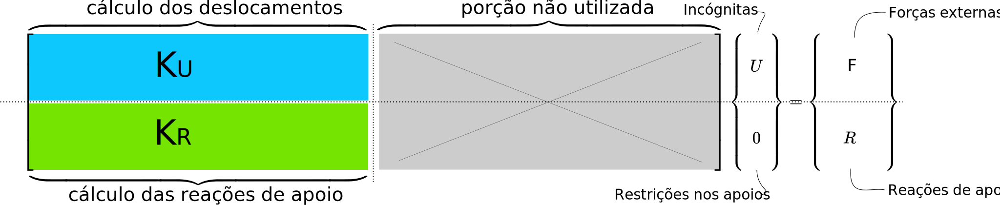
A montagem da matriz $\textbf{K}_U$ segue a seguinte equação:
Para todos os elementos $b$ da estrutura, no caso $n=3$, sendo $i$ e $j$ variando de 1 a 6, os seis graus de liberdade livres da estrutura. O $\psi$ é um parâmetro utilizado para eliminar os termos iguais a zero do somatório, ou seja, os termos referentes aos nós que não possuem nenhum grau de liberdade do elemento que influência o grau de liberdade $i$ ou $j$ da estrutura.
Lembrando que isso só funciona porque numeramos primeiro os graus de liberdade livres da estrutura! Observe que somente vamos utilizar as colunas de 1 a 6 do coletor. Já sabe o porque? E as demais?
Notação
Atenção na notação, no somatório b é simplesmente o número do elemento e $g$ é apenas um subscrito indicador de que $\textbf{k}$ é a matriz do elemento no sistema global e entre parênteses os indicadores do elemento da matriz, formando, por exemplo .
Vamos fazer para alguns elementos da matriz de rigidez para o cálculo dos deslocamentos, $\textbf{K}_U$, para ilustrar a aplicação da equação que a determina, começando com o elemento , ou seja, $i=1$ e $j=1$ e $n$ o número total de elementos da estrutura, no caso 3.
Já substituído o valor de $\psi_b$ por 0 ou 1.
Como mais um exemplo, vamos fazer $i=3$ e $j=5$, ou seja, determinar $\textbf{K}_{U(3,5)}$, já substituído o valor de $\psi_b$ por 0 ou 1 e apenas utilizando os valores referentes a $\psi_b = 1$.
Portanto, fazendo a mesma aplicação para todos os 36 termos (matriz 6x6) chegamos a matriz de rigidez para o cálculo dos deslocamentos, $\textbf{K}_U$.
Determinação da matriz para cálculo das reações de apoio
A metodologia é a mesma, no entanto, agora devemos percorrer o coletor para todas as barras (linhas) e todos os graus de liberdade (colunas), inclusive os restringidos. Precisamos dos graus de liberdade livres para identificar onde possuímos deslocamentos e precisamos dos graus de liberdade restringidos para relacionar as reações de apoio. Por isso, precisamos modificar um pouco a relação dos índices para que $i$ e $j$ signifiquem 1, 2, .., 6 na matriz de rigidez para cálculo das reações de apoio e 7, 9, ...,12 no índice da coluna do coletor, $\textbf{C}$, apenas quando se referir à linhas que serão calculadas e posicionadas na matriz de rigidez para cálculo dos deslocamentos.
Isso é bem simples, basta adicionarmos o número de graus de liberdade livres da estrutura relativos às linhas, no nosso caso 6, ao índice $i$ quando for relativo a matriz coletor $\textbf{C}$.
Vamos fazer para alguns elementos da matriz de rigidez para o cálculo dos deslocamentos, $\textbf{K}_R$, para ilustrar a aplicação da equação que a determina, começando com o elemento , ou seja, $i=1$ e $j=1$ e $n$ o número total de elementos da estrutura, no caso 3.
Já substituído o valor de $\psi_b$ por 0 ou 1 e apenas utilizando os valores referentes a $\psi_b = 1$.
Como mais um exemplo, vamos fazer $i=4$ e $j=6$, ou seja, determinar , já substituído o valor de $\psi_b$ por 0 ou 1 e apenas utilizando os valores referentes a $\psi_b = 1$.
Portanto, fazendo a mesma aplicação para todos os 81 termos (matriz 9x9) chegamos a matriz de rigidez para o cálculo dos deslocamentos, $\textbf{K}_R$.
Determinada as porções da matriz de rigidez da estrutura para o cálculo dos deslocamentos e reações de apoio, precisamos definir os vetores de deslocamentos e forças nodais a essas matrizes associados para montar o sistema de equações lineares de equilíbrio
Deslocamentos e forças nodais
O equilibro estático da estrutura em MEF é regido pela mesma expressão que utilizamos para o equilíbrio do elemento englobando todos os graus de liberdade da estrutura, ou seja, o equilíbrio estático da estrutura pelo MEF é dado pela equação:
Sendo $\textbf{U}$ o vetor de deslocamentos da estrutura e $\textbf{F}$ o vetor de forças nodais da estrutura.
Os vetores $\textbf{U}$ e $\textbf{F}$ representam os deslocamentos da estrutura, definidos pelos graus de liberdade, e as forças nodais relativas aos graus de liberdade. Portanto, podemos escrevê-los de forma genérica como:
Sabemos, por enquanto, os valores dos deslocamentos prescritos nos apoios, que no caso são zero mas não sabemos os valores dos deslocamentos em cada grau de liberdade livre do vetor $\textbf{U}$, afinal essas são as nossa incógnitas do problema. Já o vetor de forças nodais $\textbf{F}$ nós conhecemos completamente, basta entender como as forças nodais se relacionam com os graus de liberdade e aplicar as condições de contorno.
Aplicando as condições de contorno
Precisamos definir quais partes do vetor de deslocamentos da estrutura e do vetor de forças nodais devem ser utilizadas para o cálculo dos deslocamentos e quais partes para o cálculo das reações de apoio. Para tal, precisamos observar e aplicar as condições de contorno do problema, em outras palavras, os efeitos dos apoios da estrutura nos vetores de deslocamentos e forças nodais da estrutura.
Observando as duas figuras acima fica fácil montar os vetores de deslocamentos e forças nodais da estrutura. Sendo os apoios dos nós 1 e 3 do tipo engaste, ou seja, restringindo a translação dos referidos nós nas duas direções, X, Y e a rotação em Z, tais vetores resultam em:
Os deslocamentos de $U_7$ a $U_12$ são iguais à zero pelas restrições dos apoios nas respectivas direções dos graus de liberdade relacionados à esses deslocamentos. As forças de $F_1$ a $F_6$ são as forças nodais equivalentes aos carregamentos das barras 1 e 2 nos graus de liberdade de 1 a 6 respectivamente, as quais precisamos determinar. E para os graus de liberdade de 7 a 12, temos as respectivas reações de apoio.
Determinação das forças nodais equivalentes para cargas com variação não linear e descontínuas
A nossa estrutura possui dois tipos de carregamentos um tanto complexos em suas barras 1 e 2, uma carga com variação não linear que no nosso caso representa a força do vento, e uma carga com descontinuidade na barra 2, a carga $g$, que no nosso caso representa o peso da placa de sinalização.
A carga com descontinuidade já vimos em vigas que podemos resolver discretizando em mais de um elemento, sendo um para cada região sem carga da viga e outro para a região com o carregamento distribuído. Mas, como escreveríamos um vetor de forças nodais equivalentes para um carregamento distribuído em apenas uma porção do elemento?
Observe que essa carga transversal em anda influencia os graus de liberdade axiais do pórtico, portanto somente as funções de forma de viga serão utilizadas para calcular o vetor de forças nodais equivalentes.
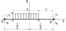
Lembra como calculávamos o vetor de forças nodais equivalentes? A equação surgia do equilíbrio dos trabalhos internos e externos pelo princípio dos trabalhos virtuais (lá em vigas) e para a carga distribuída constante resultava em:
No entanto, agora a nossa carga somente existe em um trecho da viga definido entre os pontos $r_1$ e $r_2$, localizados pela distância d da carga em relação ao no 2 e o comprimento $l_g$ da carga distribuída. A solução é simples, basta dividir a integral acima em uma soma de três partes, uma que vai de $-\frac{l}{2}$ até $r_1$, trecho 1 da viga, outra que vai de $r_1$ a $r_2$, trecho 2 e o trecho 3 final de $r_2$ até $\frac{l}{2}$. Porém, como o trecho 2 e o trecho 3 não possuem carga, ou seja, $g = 0$, as integrais desses trechos é igual a zero sobrando apenas:
Sabemos que as funções de forma de viga são as seguintes:
Portanto, nosso vetor de cargas nodais equivalentes se escreve e se integra:
Substituindo os valores dos limites de integração, chegamos ao vetor de forças nodais equivalentes para a carga distribuída em uma porção do elemento:
Sabendo que o peso da placa é de 300 kg distribuídos em 4,0 m (comprimento da placa), resulta em uma carga distribuída $g$ em $kN/cm$ (para manter a uniformização das unidades) em:
Os valores de $r_1$ e $r_2$ podem ser calculados em função das distâncias $l_g = 400$ cm e $d = 420$ cm, resultando em $r_1 = -350$ cm e $r_2 = 50$ cm. Sendo assim, o vetor de cargas nodais equivalentes para a carga $g$ da placa resulta em:
Como estamos montando um pórtico, precisamos também considerar os efeitos axiais, no entanto, a carga distribuída $g$ somente influencia os graus de liberdade de viga, por ser transversal ao elemento. Corrigir isso é fácil, basta adicionarmos zero no vetor de forças nodais equivalentes nos graus de liberdade relativos aos efeitos axiais simplesmente expandindo o vetor calculado para a viga da seguinte forma:
No caso da carga com variação não linear partimos do mesmo princípio trabalhando apenas com os efeitos de viga. Sabemos que o vetor de forças nodais equivalentes pode ser escrito na seguinte forma genérica, considerando agora a função dentro da integral pois varia no comprimento:
Porém, temos um problema aqui. A função definida para a carga do vento $v = 0,0046587 y^{0,2}kN/cm$ aplicada no elemento 1 (direção oposta à s) foi definida partindo-se de um valor zero o que é incompatível com as nossas funções de interpolação que foram definidas com valor inicial de $-\frac{l}{2}$.
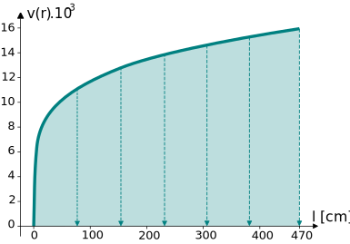
Temos duas opções aqui: ou ajustamos a função do vento para que inicie também em $-\frac{l}{2}$ ou reescrevemos as funções de interpolação com a origem no nó 1 do elemento ao invés de no meio do elemento. Mais fácil reescrever 1 função ou 4? Reescrevendo a função para a carga do vento para iniciar no valor de $-\frac{l}{2}$ é simples, basta somar ao valor de $r$ a quantidade de $\frac{l}{2}$, ou seja, a função da carga de vento corrigida se escreve (já em $kN/cm^2$):
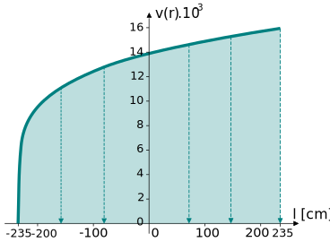
Mudança de variável
Observe que a variável y da função de vento foi substituída por r pois estamos no domínio local do elemento.
Ou seja, o nosso vetor de forças nodais equivalentes é o resultado da seguinte integral no comprimento do elemento carregado:
Portanto, nosso vetor de cargas nodais equivalentes de vento se escreve:
e se integra:
Substituindo os limites da integral e utilizando para $l = 470$ cm, o comprimento do pilar onde incide o vento, o vetor da cargas nodais equivalente ao vento resulta em:
Da mesma forma que o vetor de forças nodais equivalentes da carga $g$, expandimos o vetor de cargas nodais equivalentes calculadas para os efeitos de viga para se adaptar a um elemento de pórtico:
No caso da carga distribuída $q = 0,02$ kN/cm, o vetor de cargas nodais é o mesmo derivado para a viga de Euler-Bernoulli, que no nosso caso vale:
O qual também expandimos para adaptar ao elemento de pórtico:
Separação das variáveis
Precisamos agora determinar porções dos vetores de deslocamentos da estrutura e de forças nodais relativos ao cálculo dos deslocamentos e das reações de apoio. Isso é bem simples e fica até explícito se observarmos o vetor de deslocamentos da estrutura.
Fica explícito porque numeramos primeiro os graus de liberdade livres!
Os primeiros 6 graus de liberdade são responsáveis pelo cálculo dos deslocamentos, conforme vimos na definição de $\textbf{K}_U$, os graus de liberdade de 7 a 12, são responsáveis pela determinação das reações de apoio, conforme vimos na determinação de $\textbf{K}_R$. Portanto, podemos escrever o vetor de deslocamentos da estrutura em apenas uma parcela relativa ao cálculo dos deslocamentos $\textbf{U}_U$, já que o restante deste vetor é zero pelas condições de contorno (apoios) e o vetor de forças nodais em duas parcelas, uma relativa ao cálculo dos deslocamentos, $\textbf{F}_U$, e outra relativa ao cálculo das reações de apoio, $\textbf{F}_R$.
No cálculo do vetor de forças nodais equivalentes para a determinação dos deslocamentos devemos levar em conta a associação de todos os vetores equivalentes derivados de todos os carregamentos da estrutura, ou seja, $\textbf{f}_g$, $\textbf{f}_q$ e $\textbf{f}_v$. A associação é simples, basta prestar atenção na forma que os graus de liberdade da estrutura estão relacionados para cada elemento com nó concorrente (procedimento manual), ou ainda, rotacionar os vetores de forças equivalentes de acordo com o ângulo de rotação das barras e utilizar o coletor para montá-los (procedimento computacional). Nós aqui vamos aplicar o procedimento computacional.
Então, primeiro precisamos rotacionar o vetor de forças nodais equivalentes dos elementos $\textbf{f}$ para que sejam escritos no sistema global XY, $\textbf{fg}$. Para tal, podemos utilizar a matriz de rotação de vetores no plano:
Sendo:
Sendo $\theta$ o ângulo do elemento onde a carga está aplicada. Como somente a carga de vento está aplicada em uma barra inclinada somente seu vetor de forças nodais equivalentes precisa ser rotacionado. De acordo com a incidência do elemento 1 (elemento com a carga de vento aplicada) seu ângulo de inclinação é de $90^o$, e portanto, sua matriz de rotação é:
Multiplicando essa matriz pelo vetor de forças nodais equivalentes ao vento $\textbf{f}_v$, chega-se ao vetor de forças nodais equivalentes para o vento no sistema global XY:
Com todos os vetores de forças nodais equivalentes escritos no sistema global (lembra que os que estavam em barras que não se rotacionaram são idênticos em ambos os sistemas) basta utilizarmos o coletor para montar o vetor de forças nodais equivalentes da estrutura.
Relembrando que o coletor para nossa estrutura é:
Que relaciona os graus de liberdade da estrutura com os elementos em função dos graus de liberdade locais de cada elemento. Ainda, lembrando que os 6 primeiros graus de liberdade da estrutura são livres e representados por $\textbf{F}_U$ e os últimos 6 restringidos representados por $\textbf{F}_R$. Os valores de $\textbf{F}_U$ podem ser obtidos por:
Sendo $b$ o número de cada barra e $\textbf{fg}b$ o vetor de cargas nodais equivalentes no sistema global aplicado no elemento $b$. Sabendo que o vento está aplicado no elemento 1, as cargas $q$ e $g$ no elemento 2 e o elemento 3 não tem cargas aplicadas, os vetores de cargas nodais equivalentes por elemento são:
Portanto:
A montagem do vetor de forças nodais equivalentes fica, por exemplo, para o $i = 1$ e $i = 3$:
O vetor completo é:
No caso do vetor de cargas nodais equivalentes para o cálculo das reações de apoio é preciso um pouco de atenção. Observe que, como todos os graus de liberdade desse vetor estão restringidos, as forças que atuam neles são desconhecidas. Porém, se observarmos o coletor, temos parcelas dos vetores de forças nodais equivalentes relativas às cargas aplicadas que influenciam nesses graus de liberdade. Portanto, esse vetor é composto de duas parcelas, uma relativa às reações de apoio incógnitas e outra relativa aos efeitos das cargas aplicadas nesses graus de liberdade.
Os valores de $\textbf{F}_R$ são obtidos por:
Sendo $b$ o número de cada barra e $\textbf{fg}b$ o vetor de cargas nodais equivalentes no sistema global aplicado no elemento $b$ e $R_{i}$ a reação de apoio do grau de liberdade $i$. Por exemplo, para os graus de liberdade restringidos 7 e 12:
O vetor completo fica:
Por que $\textbf{U}_U$ é utilizado para calcular os deslocamentos e as reações de apoio? Precisamos dos efeitos dos graus de liberdade livres nos restringidos para calcular as reações de apoio, ou seja, as reações de apoio são proporcionais aos deslocamentos da estrutura em função da rigidez relativa entre os graus de liberdade livres e restringidos.
Ou seja, podemos escrever nosso equilíbrio estático para cálculo dos deslocamentos utilizando a matriz $\textbf{K}_U$ como:
E, para calcular as reações de apoio utilizamos a matriz $\textbf{K}_R$ na forma:
Cálculo dos deslocamentos
O cálculo dos deslocamentos é feito resolvendo-se o seguinte sistema de equações, escrito na forma matricial:
Existem diversas formas de resolvê-lo, que você já conhece e portanto usando Cholesky ou outro método chegamos a:
Por que alguns valores deram negativos? Lembra das direções que impomos aos graus de liberdade globais, definidas nos sentidos positivos dos eixos $X$, $Y$ e $Z$ (rotação)? Então, se o deslocamento ou rotação desse positivo, significa que sua direção seria a mesma do grau de liberdade, no caso negativo, significa que a direção do deslocamento é oposta à do grau de liberdade. E quais são as unidades desses deslocamentos? Isso, cm!
Cálculo das reações de apoio
Com os deslocamentos calculados, podemos utilizar a separação de variáveis que foi feita com a matriz de rigidez e os vetores de deslocamentos e forças nodais para calcular as reações de apoio.
Substituindo os valores dos deslocamentos e subtraindo os valores conhecidos
E, portanto, após a multiplicação da porção da matriz de rigidez pelo vetor de deslocamentos nodais, chegamos à:
Ou seja, as reações de apoio nos graus de liberdade 9 do nó 1, por exemplo, vale $R_9 = 83,7099$ kNcm, indicando uma rotação no sentido anti-horário (sinal positivo).
A unidade você já sabe, usamos kN para as forças e cm para os comprimentos.
Tensões e deformações nos elementos
Como você já sabe, para calcular as tensões nos elementos precisamos transportar os deslocamentos determinados no sistema global $X$, $Y$ para o sistema local $r$, $s$ do elemento. Então, primeiro, precisamos escrever o vetor de deslocamentos completo, com todos os deslocamentos de todos os graus de liberdade, inclusive os restringidos, ou seja:
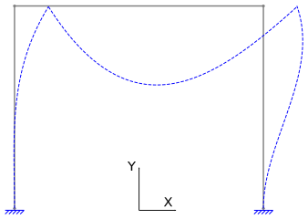
Deslocamentos no sistema local do elemento
O próximo passo é desacoplar todos os elementos da estrutura escrevendo para cada um seu vetor de deslocamentos no sistema global. Nós vamos fazer isso utilizando novamente o coletor, mas agora de forma oposta, ou seja, nós queremos saber qual é o grau de liberdade de certo elemento relacionado com certo grau de liberdade da estrutura.
Sabemos que as linhas do coletor são os elementos da estrutura, que as colunas são os graus de liberdade da estrutura e seus valores os graus de liberdade dos elementos (lembrando que os espaços vazios são zeros). Portanto, para escrever os valores de deslocamentos de cada elemento no sistema global, aplicamos o coletor ao contrário. Sendo $\textbf{ug}b$ o vetor de deslocamentos globais de um elemento $b$, seus valores são determinados da seguinte forma, com $i$ variando de 1 a 12:
Ou seja, para todo calor de $C_{b, i}$ que não é zero obtém-se o correspondente valor de deslocamento do elemento do vetor de deslocamentos da estrutura. Por exemplo, para o elemento 1:
E, portanto, o vetor de deslocamentos do elemento 1 no sistema global é:
Os vetores dos elementos 2 e 3 são determinados da mesma forma e resultam em:
Antes de iniciar o cálculo das deformações e depois das tensões precisamos escrever esses vetores de deslocamentos no sistema local $r$, $s$ do elemento. Fazemos isso utilizando a matriz de rotação de vetores, a mesma que usamos para o carregamento de vento, porém de forma inversa multiplicada pelos respectivos vetores de deslocamentos do elemento no sistema global.
A matriz de rotação de vetores inversa é igual a sua transposta:
Sendo $\theta$ o ângulo do elemento. Portanto, para cada elemento:
Elemento 1: $\theta = 90^o$, $sen \theta = 1$, $cos \theta = 0$.
Elemento 2: $\theta = 0^o$, $sen \theta = 0$, $cos \theta = 1$.
Elemento 3: $\theta = 90^o$, $sen \theta = 1$, $cos \theta = 0$.
Deformações nos elementos
A deformação nos elementos é determinada com a utilização da matriz $\textbf{B}$, matriz das derivadas das funções de interpolação, utilizando a seguinte relação:
No entanto, como o elemento de pórtico possui dois efeitos diferentes no mesmo elemento, flexão e axial, precisaremos escrever uma matriz $\textbf{B}$ para que funcione e multiplique corretamente os deslocamentos do pórtico e resulte em apenas uma deformação normal máxima (considerada nos extremos da seção transversal).
Sabemos que os deslocamentos axiais se interpolam por funções lineares, como vimos em treliças, e que os deslocamentos de flexão se interpolam por funções cúbicas que derivamos. Portanto, a matriz $\textbf{B}_T$ para treliças e $\textbf{B}_V$ para vigas são:
Sabemos que o primeiro e o quarto graus de liberdade representam os deslocamentos axiais, que o segundo e o quinto representam os deslocamentos transversais e o terceiro e o sexto as rotações. Dessa forma podemos compor uma matriz $\textbf{B}$ para o pórtico com 6 funções obtidas de $\textbf{B}_T$ e $\textbf{B}_V$ e posicionadas de acordo com cada deslocamento separando os axiais da flexão pois não consideramos esses efeitos acoplados:
Observe que as funções relativas aos efeitos de flexão são função de r e s. Assim, podemos calcular a deformação máxima em cada elemento.
Sendo assim calculamos dois valores de deformação, um representativo do efeito axial e outro da deformação.
Elemento 1: $L_1 = 470$ cm.
Elemento 2: $L_2 = 940$ cm.
Elemento 3: $L_3 = 470$ cm.
Os vetores de deformação calculados fornecem a deformação axial no primeiro elemento e a deformação por flexão no segundo para cada barra.
Tensões nos elementos
Como estamos trabalhando com material no regime elástico linear, o cálculo das tensões é simples, basta multiplicar as deformações pelo módulo de elasticidade do material de cada elemento:
Elemento 1: $E_1 = 20000$ kN/cm2.
Elemento 2: $E_2 = 20000$ kN/cm2.
Elemento 3: $E_3 = 20000$ kN/cm2.
Lembrando que essas tensões estão em kN/cm2. Para ter uma noção a tensão axial no elemento 1 é de 0,78 MPa ou 777,88 kN/m2.
Esforços no Pórtico
Esforço normal
O cálculo do esforço normal é simples, basta multiplicar as tensões axiais calculadas para os elementos pela área da seção transversal de cada elemento.
Elemento 1: ($A_1 = 143,75 cm^2$)
Elemento 2: ($A_2 = 143,75 cm^2$)
Elemento 3: ($A_3 = 143,75 cm^2$)
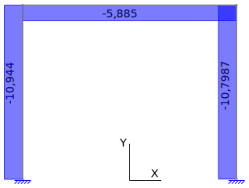
Momentos fletores
Assim como fizemos para as vigas, vamos calcular os momentos fletores utilizando a integral na área da seção transversal das tensões na seção transversal multiplicadas por s:
Sendo o eixo $p$ o eixo local do elemento perpendicular ao plano da viga, formando o sistema local de coordenadas tridimensional $r$, $s$, $p$.
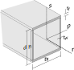
A distribuição das tensões na seção transversal não possui uma largura única, portanto a integral em $p$ deverá ser feita para a região da alma e para as mesas em separado. Como a largura é constante, essa integral resulta no próprio valor da largura da alma e mesas.
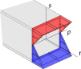
O $b_f$ e o $t_w$ estão multiplicados por 2 pois iremos resolver a integral em $s$ para uma das mesas e uma das almas apenas, já que são iguais. A integral na alma percorre todo o seu comprimento $h$ e a integral das mesas toda a sua altura $t_f$. Lembrando que como a seção transversal está posicionada em referência ao eixo local, a integral das mesas inicia no final da alma, em $\frac{h}{2}$.
Resolvendo para cada elemento, utilizando a respectiva equação das tensões no elemento:
Elemento 1
Elemento 2
Elemento 3
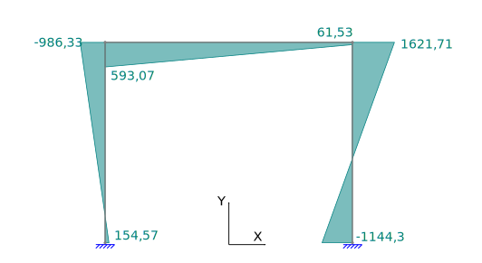
Aviso
Lembre-se de que as equações dos momentos estão no sistema local e precisam ser adaptadas para resultar nos diagramas da figura. Os valores são idênticos, mas os sinais são alterados. Lembre-se que $r$ varia de $-\frac{l}{2}$ até $\frac{l}{2}$, sendo $l$ o comprimento total do elemento.
Você acha que esses valores estão corretos? O momento não deveria ser parabólico na viga? Pois é, a mesma situação ocorre no pórtico com o elemento de 2 nós, as funções de interpolação não possuem ordem suficiente para interpolar corretamente os momentos e, consequentemente, os cortantes também. As soluções são aumentar bastante o número de elementos ou melhorar a ordem das funções de interpolação, utilizando o elemento com 3 nós. A imagem abaixo é o diagrama de momentos fletores para o mesmo pórtico, com as mesmas cargas, porém discretizado em 3 elementos de pórtico com 3 nós cada.
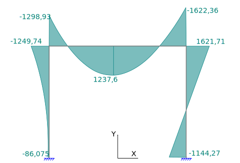
E esses valores agora estão corretos? Percebeu algo estranho? Pois é, os valores de momento entre os pilares e a viga deveriam ser iguais. E por que não são? Lembra como calculamos a carga $q$, o peso da placa? Nós consideramos que ela atuaria em uma certa porção do elemento, calculamos a integral para obter os valores das forças nodais equivalentes desse carregamento e o utilizamos na solução da estrutura. Esse procedimento está certo. O problema é que é um procedimento aproximado pois a consideração do elemento com a carga distribuída em uma porção não leva em conta o efeito da descontinuidade causada por esse carregamento no elemento. Isso fica bem explícito no diagrama de esforços cortantes. Somente conseguimos levar esse efeito em conta colocando um nó na descontinuidade, pois os resultados principais de elementos finitos são os deslocamentos nos nós. Em outras palavras, precisaríamos discretizar a viga desse pórtico também em três elementos para conseguir o efeito da descontinuidade no diagrama de esforços. A imagem abaixo mostra o diagrama de momentos fletores para essa condição.
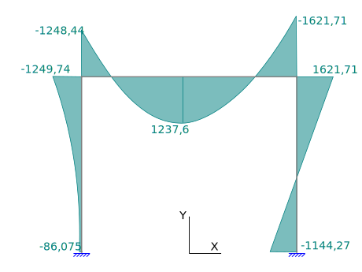
Os valores melhoraram muito, mas observe que ainda existe uma certa descontinuidade entre o pilar da esquerda e a viga no momento. Isso é função da forma da carga de vento que é tão complexa que nem o elemento de 3 nós consegue resolver de forma satisfatória. Nesse caso, como a carga é aplicada no pilar da esquerda, o valor do momento desde é o valor aproximado.
Esforço Cortante
E os esforços cortantes são obtidos com a primeira derivada em $r$ das equações dos momentos, ou seja, novamente possuem valores constantes onde deveriam ser lineares.
Elemento 1
Elemento 2
Elemento 3
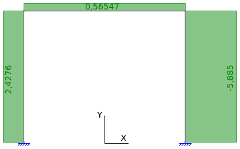
Abaixo os valores de cortante para o pórtico com 3 elementos e 3 nós por elemento.
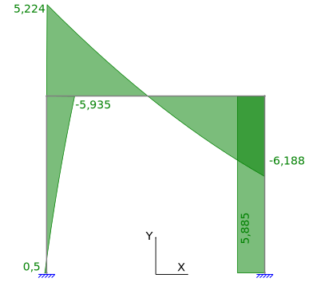
E por fim, os valores do cortante para o pórtico com 5 elementos, com a viga discretizada em 3 elementos para conseguir o efeito da descontinuidade, também com o elemento de três nós.
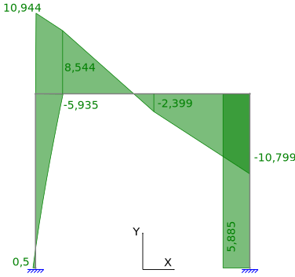
Deslocamentos
Note que mesmo com problemas nos esforços e, na verdade, já nas deformações, os resultados de deslocamentos do pórtico discretizado em 3 elementos de 2 nós cada, são exatos com os analíticos. O mesmo vale para o esforço normal, mas porque?